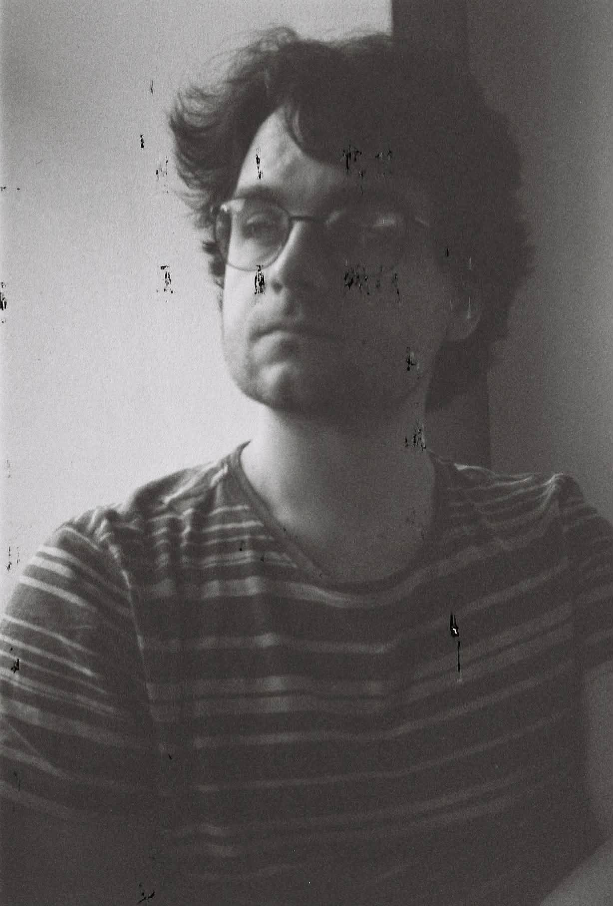

Welcome to my homepage! I am a research fellow at the Department of Computer Science, University of Warwick, hosted by Igor Carboni Oliveira. My research interests are bounded arithmetic, proof complexity and computational complexity.
Before that, I completed my PhD. at the Department of Algebra of the Faculty of Mathematics and Physics, Charles University, Prague under the supervision of Jan Krajíček.
Publications and Preprints
-
Forcing in bounded arithmetic and set theory: analogies and differences2026 pre-print, submitted
-
Parallelism and Adaptivity in Student-Teacher Witnessing2026 pre-print, submitted
-
Prime Factorization in Models of PV_1Logical Methods in Computer Science, April 7, 2026, Volume 22, Issue 2 - https://doi.org/10.46298/lmcs-22(2:1)2026
-
Feasibility of Primality in Bounded ArithmeticForum of Mathematics, Sigma. 2026;14:e49. doi:10.1017/fms.2026.10194
-
Limits of structures and Total NP Search ProblemsZ. Math. Log. Grundlagen Math., to appear (2026), pp. 135–156. DOI: 10.60866/CAM.257.